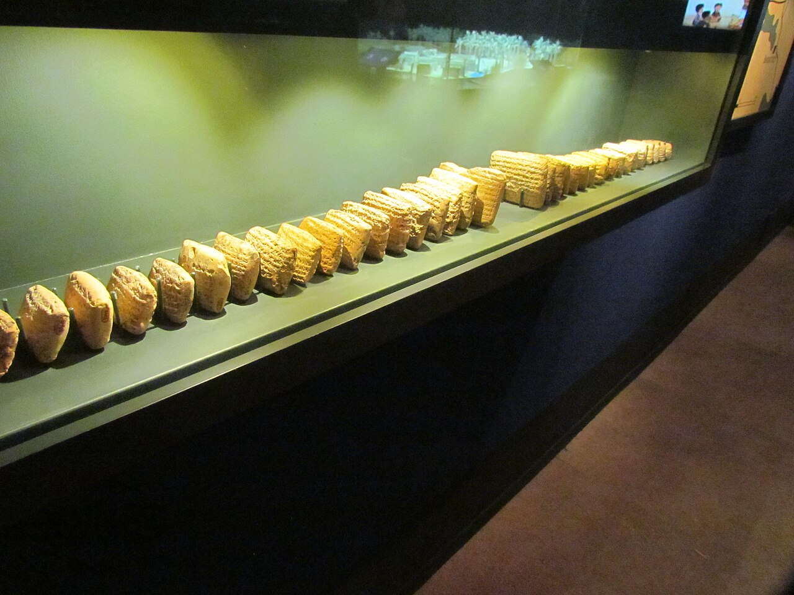

Al-Yahudu Tablets

About two hundred cuneiform tablets recording the business of Judean exiles settled in a Babylonian town literally named 'Town of Judah.' They farmed, lent, borrowed, and witnessed contracts, bearing Hebrew names — including names honoring Yahweh — across three generations. The tablets surfaced on the antiquities market rather than in a controlled dig, but scholars accept them on internal evidence: the names, the place, and the dates all fit.
Biblical Significance
Psalm 137 asks how God's people could sing in a foreign land. The Al-Yahudu tablets answer with ledgers: they did — they worked, married, named their children for the LORD, and stayed recognizably Judahite in Babylon for generations. Exile did not erase them; it is where the Jewish people, as a people of the book, began to take shape.
Interpretations
Scholars accept the tablets on internal evidence — Judean names, the town name ‘Al-Yahudu,’ and consistent dates — while noting they surfaced on the market, not in a controlled dig.